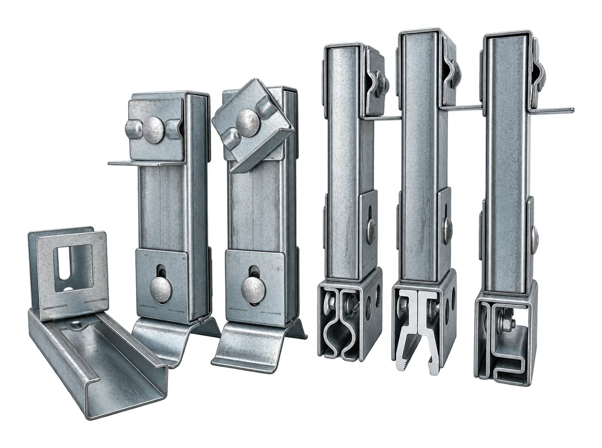
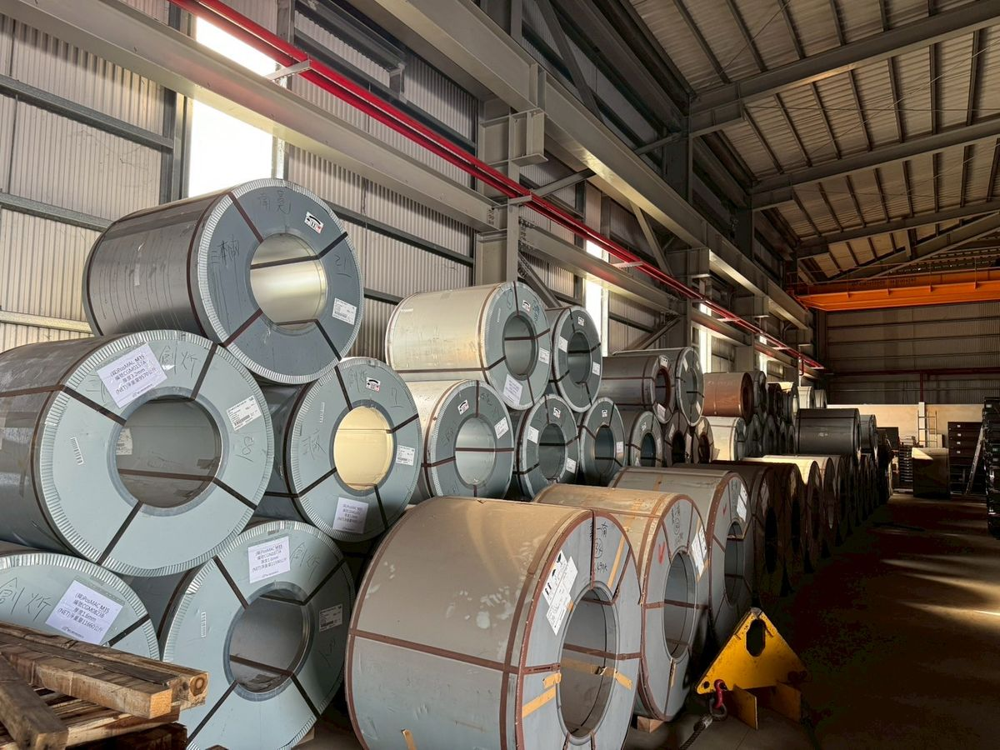
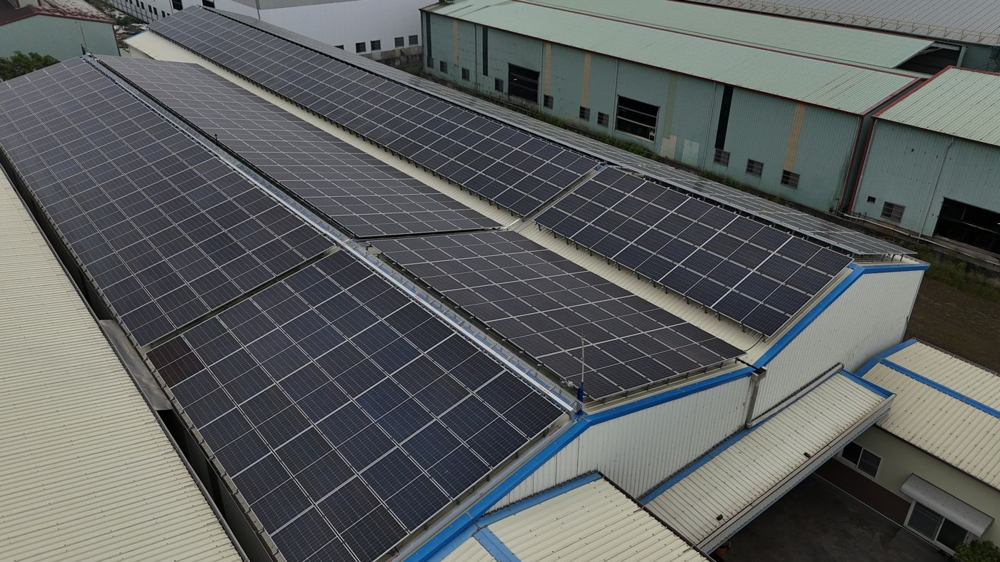
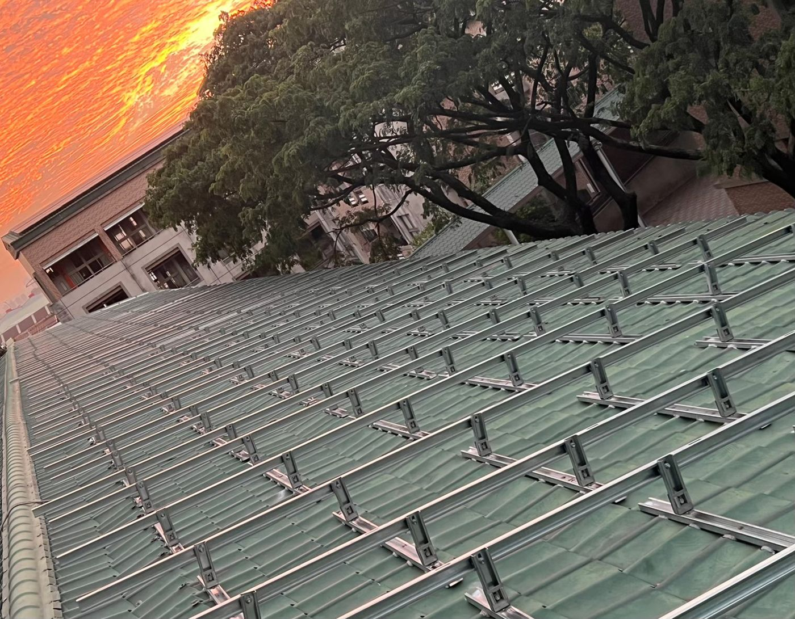
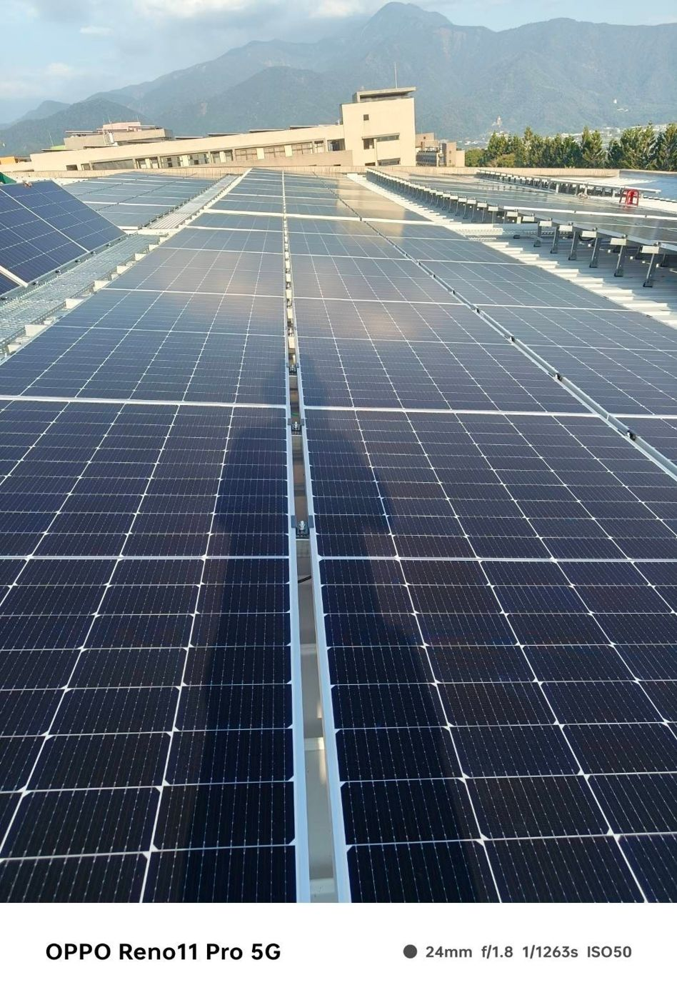
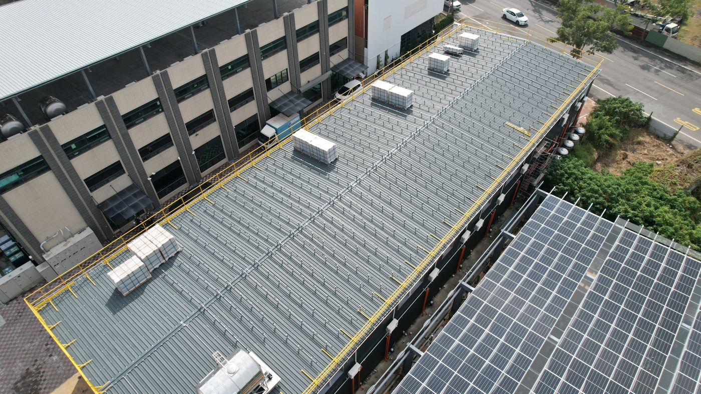
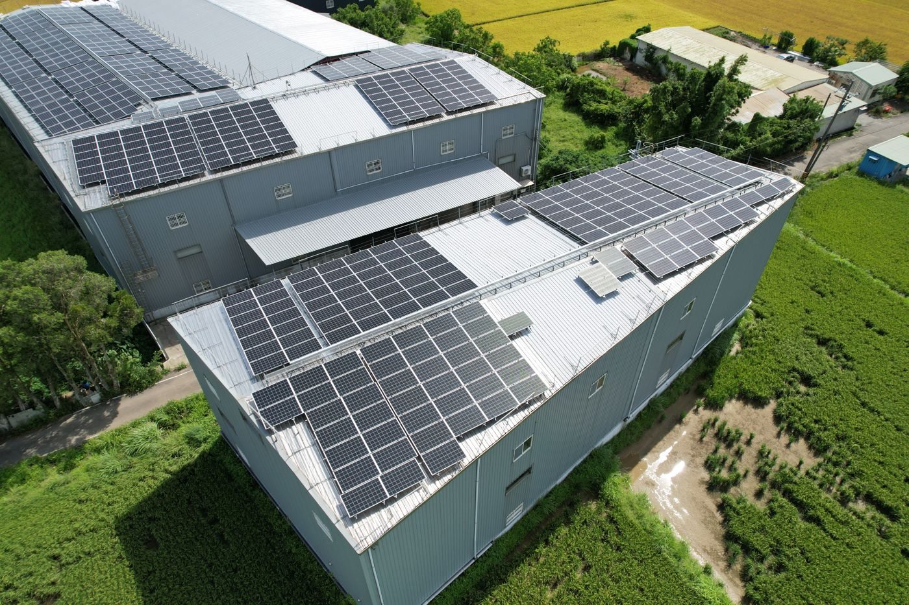
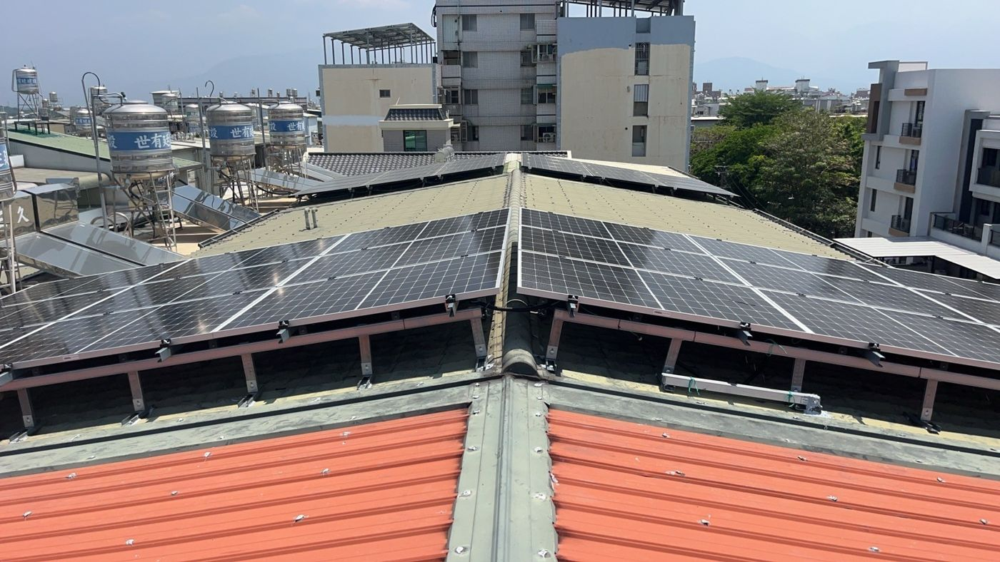

鎂鋁鋅支架Zn-Al-Mg Coated Solar Mounting
屋頂平鋪型、夾具型、滑軌型，以及棚架型，依案場量身設計。Flat, clamp and rail roof mounts, plus canopy structures — designed for each site.
鋼材買賣Steel Supply
H 型鋼、鎂鋁鋅 C 型鋼、船板／鋪路板、鋼板樁、鋼軌、定尺鐵板，鋼捲分條與裁切加工。H-beams, Zn-Al-Mg C-channels, ship/road plates, sheet piles, rails, cut-to-size plates, coil slitting and cutting.
太陽能支架Solar Mounting Systems
台灣的工廠與住家屋頂多為金屬浪板。我們針對不同浪板型式開發專屬底座與夾具，讓支架與屋頂緊密結合、耐風耐蝕；同時提供棚架型，滿足 RC 地坪、地面案場與大跨距需求。Most factory and residential roofs in Taiwan use metal roof sheets. We develop dedicated bases and clamps for each profile so the mount locks tightly to the roof and resists wind and corrosion — plus canopy structures for RC slabs, ground sites and large spans.


Rooftop · Flat屋頂平鋪型Flat Roof Mount
八字型底座，施工簡便，可直接以自攻螺釘固定於浪板上。依照各種浪板型式採用相對應之底座。A-frame base that fixes directly to the roof sheet with self-tapping screws. A matching base is used for each type of roof sheet.
- 自攻螺釘直接固定，施工快速Fixes with self-tapping screws — fast install
- SGS 拉拔力：木攻釘 2,092 kgf／自攻釘 1,505 kgfSGS pull-out: 2,092 kgf (wood screw) / 1,505 kgf (self-tapping)
- 依浪板型號提供專屬底座Dedicated base for each roof profile
| 型號Model | 適用浪板Roof sheet | 浪峰高度Rib height |
|---|---|---|
| 015 | 750 型五溝750 type, 5-rib | 24.5 mm (±2) |
| 060 | 750 型三溝750 type, 3-rib | 38 mm (±2) |
| 069 | 700 型700 type | 69 mm (±2) |

Rooftop · Clamp屋頂夾具型Roof Clamp Mount
以夾式安裝於浪板上，不傷屋頂浪板設計。免打釘、免打膠，施工快速。Clamps onto the roof sheet without damaging it — no drilling, no sealant, fast installation.
- 免打釘、免打膠，保護屋頂防水No drilling or sealant — roof stays watertight
- SGS 測試：即使浪板變形，夾具仍未脫離浪板SGS test: clamp stays on even when the sheet deforms
- 拉拔力 955 kgf（017）／531 kgf（AL001）Pull-out 955 kgf (017) / 531 kgf (AL001)
| 型號Model | 適用浪板Roof sheet |
|---|---|
| 71+72 | 730B 咬合式730B seam-lock |
| 017 | 730B 咬合式730B seam-lock |
| AL001 | 430B 扣合式430B snap-lock |

Rooftop · Rail滑軌型Rail Mount
底座採滑軌設計，可依需求自由調整間距，施工便利性佳。適用於琉璃鋼瓦或特殊形式之浪板。A sliding-rail base lets you adjust spacing freely for easy installation. Suited to glazed steel tiles and special roof-sheet profiles.
- 間距可自由調整Freely adjustable spacing
- 適用琉璃鋼瓦（鋼瓦、古典瓦）For glazed steel tiles (incl. classic tile profiles)
- SGS 拉拔力 1,287 kgfSGS pull-out 1,287 kgf

Canopy棚架型Canopy Structure
結構堅固穩定，具高承載力，適用於較大跨距。以 RC 固定腳座，並依支架高度選用 C 型鋼或 H 型鋼作為主結構，適用屋頂棚架、停車棚與地面型案場。A strong, stable structure with high load capacity for larger spans. Bases are anchored to RC footings, with C-channels or H-beams chosen as the main structure according to the required height — for rooftop canopies, carports and ground-mounted sites.
- RC 固定腳座Bases anchored to RC footings
- 依高度選用 C 型鋼或 H 型鋼C-channel or H-beam, chosen by height
| 材料Material | 尺寸（mm）Size (mm) | 厚度（mm）Thickness (mm) |
|---|---|---|
| H 型鋼熱浸鍍鋅H-beamHot-dip galvanised | 150 × 75 | 腹板 5／翼板 7Web 5 / Flange 7 |
| 200 × 100 | 腹板 5.5／翼板 8Web 5.5 / Flange 8 | |
| C 型鋼鎂鋁鋅C-channelZn-Al-Mg | 125 × 50 | 2.3 |
| 150 × 65 | 2.3、3.2 |

Accessories常用配件Accessories
因應不同案場提供各式不同配件，未全數列出。A range of accessories for different sites — not all are listed here.
- 中壓塊、側壓塊、下鎖片等Mid clamps, end clamps, lock plates and more
- SGS 拉拔力：中壓塊 1,008 kgf／側壓塊 885 kgfSGS pull-out: mid clamp 1,008 kgf / end clamp 885 kgf
鎂鋁鋅鍍層鋼材Zn-Al-Mg Coated Steel
創炘支架採用韓國浦項 PosMAC® M35 與日本製鐵 SuperDyma® K35 鎂鋁鋅鍍層鋼材。鍍層具犧牲性陽極保護與屏障保護，切邊處的腐蝕產物會覆蓋裸露邊緣，減緩紅鏽擴展。Our mounts use POSCO PosMAC® M35 and Nippon Steel SuperDyma® K35 Zn-Al-Mg coated steel. The coating provides sacrificial and barrier protection, and corrosion products cover exposed cut edges to slow red-rust spread.

產品檢驗報告Test Reports
關鍵零件皆經第三方檢驗，以數據證明強度與耐久。需要完整報告請與我們聯繫。Key components are independently tested. Contact us for the full reports.
風洞試驗Wind tunnel test
TÜV Rheinland
鹽霧試驗 SuperDyma®Salt spray, SuperDyma®
SGS DK-19-00933
中壓塊（003）拉拔力Mid clamp (003) pull-out
SGS KR-21-00028
側壓塊（082）拉拔力End clamp (082) pull-out
SGS KR-21-00027
平鋪型（08+15）木攻釘Flat mount, wood screw
SGS KR-21-00017
平鋪型（08+15）自攻釘Flat mount, self-tapping
SGS KR-21-00019
滑軌型組件Rail assembly
SGS KR-21-00033
縱樑組合Beam joint
SGS KK-18-08507A
鋼材買賣Steel Supply
源自鋼鐵家族，我們同時供應各式鋼材與加工服務。With roots in the steel industry, we also supply a range of steel products and processing services.
服務流程Service Flow
公司位於高雄大寮，服務台灣各地案場。Based in Daliao, Kaohsiung, serving sites across Taiwan.
- 1諮詢洽談Consultation
- 2現場勘查
及丈量Site Survey
& Measurement - 3專案報價
及下單Quotation
& Order - 4專業工程
設計繪圖Engineering
Design & Drawings - 5專車出貨
至案場Truck Delivery
to Site - 6完整
售後服務After-Sales
Support
常見問題Frequently Asked Questions
創炘的太陽能支架用什麼材質？What material are Invention mounts made of?
採用鎂鋁鋅合金鍍層鋼材：日本 SuperDyma®（鍍層 K35）與韓國浦項 PosMAC®（鍍層 M35），原料由創炘自行進口。切割面會生成 Simonkolleite 保護膜，持續防鏽。Zn-Al-Mg coated steel: Japanese SuperDyma® (K35 coating) and Korean POSCO PosMAC® (M35 coating), imported directly by Invention. Cut edges form a protective Simonkolleite layer that keeps resisting rust.
哪一種支架適合我的屋頂？Which mount suits my roof?
金屬浪板屋頂可用屋頂平鋪型（自攻螺釘固定於 C 型鋼）或屋頂夾具型（730B 咬合式、430B 扣合式，免打釘）；琉璃鋼瓦或特殊浪板用滑軌型；大跨距、停車棚、RC 地坪或地面案場用棚架型。不確定時可提供屋頂照片，由我們建議。Metal roof sheets: flat mount (self-tapping screws into the purlin) or roof clamp (730B seam-lock, 430B snap-lock, no drilling). Glazed steel tiles or special profiles: rail mount. Large spans, carports, RC slabs and ground sites: canopy structure. Not sure? Send us roof photos.
支架有哪些檢驗報告？What test reports are available?
TÜV 風洞試驗（平均風速 61.2 m/s 持續 15 分鐘無損毀）、SGS 拉拔力試驗（例如平鋪型木攻釘 2,092 kgf、自攻釘 1,505 kgf、滑軌型 1,287 kgf）、SuperDyma® 5,000 小時鹽霧試驗，以及 C 型鋼抗彎與鋼材強度試驗。完整報告可來信索取。TÜV wind-tunnel test (61.2 m/s average for 15 minutes, no damage), SGS pull-out tests (e.g. flat mount 2,092 kgf with wood screws, 1,505 kgf with self-tapping screws, rail mount 1,287 kgf), a 5,000-hour salt-spray test on SuperDyma®, plus C-channel bending and steel strength tests. Full reports on request.
服務範圍與流程？What is your service area and process?
公司位於高雄大寮，服務台灣各地案場。流程：諮詢洽談 → 現場勘查及丈量 → 專案報價及下單 → 專業工程設計繪圖 → 專車出貨至案場 → 完整售後服務。Based in Daliao, Kaohsiung, we serve sites across Taiwan. Process: consultation → site survey → quote and order → engineering drawings → dedicated truck delivery → after-sales support.
除了太陽能支架，也能買鋼材嗎？Can I buy steel as well?
可以。創炘供應 H 型鋼（常備多種規格，其餘可預約進口）、鎂鋁鋅 C 型鋼（可依需求裁切長度）、船板／鋪路板、鋼板樁、鋼軌與定尺鐵板，並提供鋼捲分條與裁切加工。Yes. We supply H-beams (many stock sizes; others imported on request), Zn-Al-Mg C-channels (cut to length), ship and road plates, sheet piles, rails and cut-to-size plates, plus coil slitting and cutting.
實績分享Completed Projects








需要專案規劃支援嗎？Need help planning your project?
提供案場地點與屋頂型式，我們安排現場勘查並提供報價。Send us your site location and roof type — we will arrange a survey and quote.